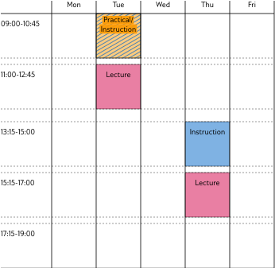

INFOFP 2025-2026 Functional Programming
This course introduces functional programming through the programming language Haskell. In contrast with the language C# – introduced in Imperatief/Game/Mobiel programmeren – which is based on statements, organized in methods and classes, functional programming is based entirely on expressions and functions. This shifts the focus from how a program operates to what it does.
Concrete topics treated in this course include higher-order functions, parametric and ad-hoc polymorphism (also known as generics and overloading in other programming languages), algebraic data types and pattern matching. These ideas appear not only in Haskell, but in other modern languages such as Scala, Swift or Kotlin. An important part of the course is devoted to reasoning about programs, either by equations or by induction.
The language Haskell imposes a strong separation between pure computations and those with side-effects, such as input and output. Monads are introduced to model the idea of sequential computation in a functional language. Similar abstractions such as functors are also part of the contents of this course.
- Lecturers
-
Matthijs Vákár and Frank Staals
For any enquiry about the course, please mention [INFOFP] in the title.
Teaching Objectives
By the end of the course you will be able to
- solve problems using a ‘functional approach’. That is, define what
needs to be computed using techniques and concepts such as
- recursion,
- pattern matching,
- composition,
- higher order functions,
- algebraic data types,
- monads,
- immutable and persistent data structures, and
- laziness.
- reason about the correctness and the types of functions.
- develop a small, real world game in the functional language Haskell.
Schedule
There are weekly lectures (2 × 2 hour), instructions (1 × 2 hour) and practicals (1 × 2 hour). Attendance is not strictly mandatory (albeit strongly recommended).
You are expected to work on your own in addition to these hours!
The lectures, instructions, and practicals typically take place at the Utrecht Science Park (‘de Uithof’). In particular, the weekly schedule is:

Literature
We will use the book “Programming in Haskell” by Graham Hutton. Each lecture typically corresponds to (a part of) a chapter from this book. You are expected to read this part of the book on your own.
There is plenty of additional reading material available on the internet. In particularly, you may find the following material useful:
- Lecture Notes from 2015/2016, mostly in Dutch
- Learn You a Haskell for Great Good by Miran Lipovača
- Haskell Wikibook
Exams
There will be a midterm and a final exam. The exams are closed book, and focus on “pen-and-paper” type programming questions.
You can find the exams of several previous years here.
Assignments
There are two kinds of mandatory assignments:
- Practical assignments pose programming problems with the aim of practicing your Haskell skills. These assignments are automatically corrected by PrairieLearn. You can ask any of the teaching assistants to suggest improvements to your code style during labs sessions.
- The final programming project consists of programming a small game in Haskell. The code is graded for correctness, design and style.
In addition to those mandatory assignments, there is an optional assignment to be made in groups to get some extra points in the grade. The assignment involves exploring and presenting some language extension or Haskell library.
Grading
The final grade depends on the two exams and the assignments.
The theory grade is T = 0.3 × grade of mid-term + 0.7 × grade of final exam.
- CT
- You need T >= 5 to pass the course.
The practical grade is P is grade of final programming project (The game).
- CP
- You need to pass at least two out of three Practical Assignments, hand in the Game Design Document, and obtain P >= 5 to pass the course.
The optional assignment grade is O.
The final grade is computed as F = min( 0.5 × T + 0.5 × P + 0.05 × O, 10 ).
The final result of the course is:
Passed with grade F (appropriately rounded according to the OER rules) if F >= 5.5 and you satisfy conditions CT and CP.
Not passed with AANV if F >= 4.0, you passed at least one Practical assignment, but you do not satisfy the conditions CT and CP.
- In this case you are entitled to aanvullende toets, to be determined per student.
- If you need to re-submit the final programming project, that grade is a 6 maximum.
Not passed with NVD otherwise.
GHC Installation Instructions
To successfully complete the course you will need
- GHC
- A Haskell compiler, and
- cabal
- A tool to install Haskell libraries (in particular the ‘gloss’ library you will need for the final project in the course).
Installing GHC used to be a bit of a hassle. Fortunately, the situation has improved a bit with respect to earlier years. We currently recommend that you install GHC using a tool called ‘ghcup’. In particular, you can follow these instructions to install ‘ghc’ and ‘cabal’.
If you want as you type error checking and intelligent completions in your editor, you may also want to install HLS, the Haskell Language server. You can also do so using ghcup.